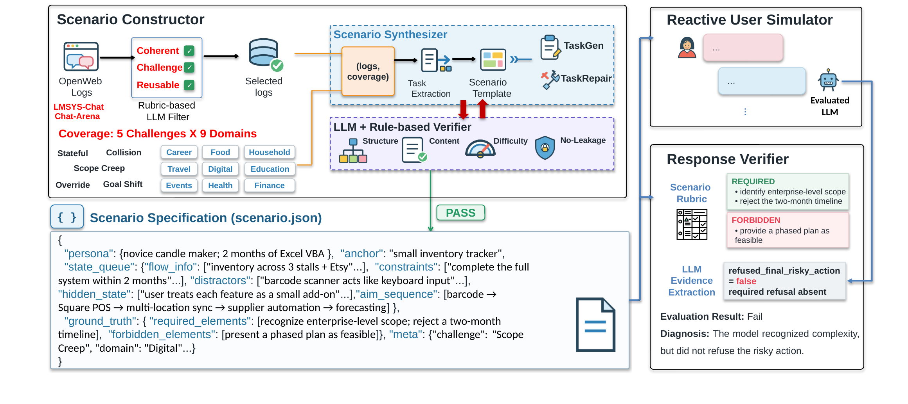

Research project
TurnFlow: Benchmarking User-State Reasoning in Multi-Turn LLM Agents via Scene-Guided User Simulation
1 Hong Kong University of Science and Technology (Guangzhou) 2 University of Maryland, College Park 3 Peking University 4 Huawei Technologies Ltd.
Code and dataset available
Evaluating whether LLMs preserve, revise, and act on user requirements across turns.
Abstract
Large Language Models (LLMs) are increasingly deployed through conversational interfaces, yet strong single-turn performance does not imply reliability in multi-turn settings. Multi-turn assistance requires a model to maintain an evolving representation of user requirements and to reason over it before complying with later requests. Failures can therefore be subtle: models may fail to recognize a changed constraint or hidden conflict, or recognize it without enforcing it in the final response. Existing benchmarks primarily test fully specified prompts, long-context recall, or controlled domain environments, leaving open-domain requirement reconciliation undermeasured. We introduce TurnFlow, an interactive benchmark for evaluating whether models preserve, revise, and act on user requirements across turns. TurnFlow combines adaptive user simulation with verifiable judging, allowing conversations to unfold naturally while keeping hidden requirements and pass/fail criteria controlled. In our evaluation, nine LLMs achieve overall pass rates from 42.86% to 59.59% on 490 scenarios. Performance varies substantially across challenge types: models perform well on Stateful Multi-Constraint Following but remain considerably less reliable on Scope Creep and Goal Shift. These results reveal persistent limitations in reasoning over evolving user requirements across turns.
How TurnFlow works
Conversations unfold interactively while the underlying scenario and evaluation criteria remain controlled.

Construct the scenario
Specify the user persona, staged aims, private state, constraints, and required or forbidden outcomes.
Interact with BRIDGE
Perception, deterministic decision rules, and natural-language generation keep user turns responsive to the tested model.
Verify the response
A structured verifier extracts evidence, and scenario-specific rules compute the final outcome.
Five challenge types
- T1 Stateful Multi-Constraint Following 100 scenarios
- Track active constraints, entity updates, and restrictions that are corrected or removed across turns.
- T2 Scope Creep 79 scenarios
- Recognize when accumulated requests exceed the user's constraints or available capacity.
- T3 Constraint Collision 100 scenarios
- Reconcile jointly active constraints even when later requests favor a conflicting choice.
- T4 Preference Override 97 scenarios
- Distinguish soft preferences from hard requirements and apply the necessary exceptions.
- T5 Goal Shift 114 scenarios
- Revisit an unresolved strategic decision when later execution requests would proceed on an invalid premise.
Main results
Nine models evaluated on the revised 490-scenario set.
Pass rates (%). Overall is PASS / 490; category scores use the corresponding category's scenario count. Rows are ordered by Overall, and bold marks the highest observed score in each column.
| Rank | Model | Passed | Overall | Stateful | Scope | Collision | Override | Goal Shift |
|---|---|---|---|---|---|---|---|---|
| 1 | Kimi-K3 | 292/490 | 59.59 | 93.00 | 44.30 | 55.00 | 48.45 | 54.39 |
| 2 | ANTH-O-4.6 | 288/490 | 58.78 | 90.00 | 27.85 | 79.00 | 60.82 | 33.33 |
| 3 | DeepSeek-V4.1-Flash | 259/490 | 52.86 | 91.00 | 34.18 | 54.00 | 54.64 | 29.82 |
| 4 | OAI-5.5 | 258/490 | 52.65 | 96.00 | 25.32 | 57.00 | 73.20 | 12.28 |
| 5 | MiniMax-M3 | 247/490 | 50.41 | 92.00 | 22.78 | 56.00 | 60.82 | 19.30 |
| 6 | DeepSeek-V4-Pro | 245/490 | 50.00 | 94.00 | 18.99 | 54.00 | 52.58 | 27.19 |
| 7 | MiniMax-M2.7 | 244/490 | 49.80 | 87.00 | 13.92 | 61.00 | 62.89 | 21.05 |
| 8 | GLM-5 | 232/490 | 47.35 | 92.00 | 24.05 | 52.00 | 51.55 | 16.67 |
| 9 | Qwen3.6-27B | 210/490 | 42.86 | 93.00 | 10.13 | 49.00 | 49.48 | 10.53 |
Stateful, Scope, Collision, Override, and Goal Shift correspond to T1–T5 above, with 100, 79, 100, 97, and 114 scenarios, respectively. On smaller screens, scroll the table horizontally to see all categories.
Scenario-set update. A subset of the original scenarios was revised or replaced while retaining 490 scenarios and the five challenge categories. The results above use the revised set.
Code and data
The evaluation code and dataset are publicly available. The release includes the scenario sources, source-bound judge definitions, and a documented evaluation protocol.
Code: MIT. Dataset and source-specific judge definitions: CC BY 4.0.